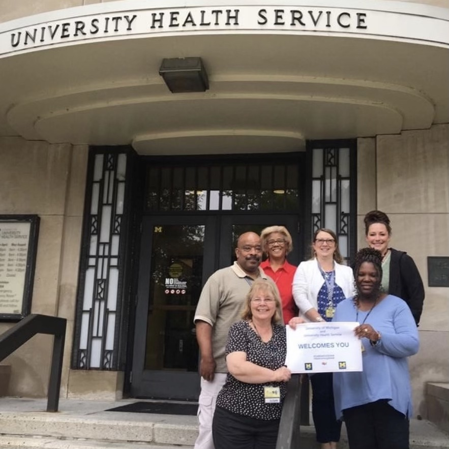
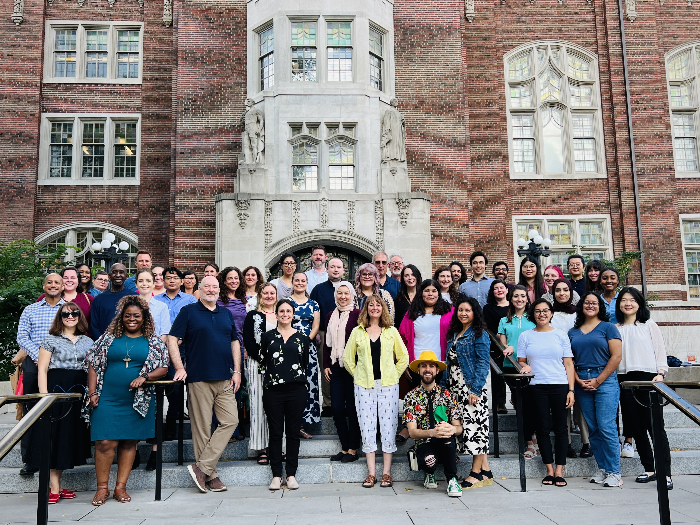

University Health Service

University Health Service (UHS) at the University of Michigan offers comprehensive healthcare,
including primary care, women's health, immunizations, and mental health support. UHS also
provides health education, wellness programs, a pharmacy, lab, and radiology services, ensuring
convenient, high-quality care for the university community. For more information, visit
the UHS website.
Counseling and Psychological Services

Counseling and Psychological Services (CAPS) at the University of Michigan supports
students' mental health with individual and group counseling, crisis intervention,
workshops, and specialized services for stress, anxiety, and more. With licensed
professionals, CAPS offers confidential, culturally sensitive care, promoting
well-being and academic success. For more information, visit
the CAPS website.
Maize & Blue Cupboard

The Maize and Blue Cupboard at the University of Michigan provides free groceries and
essentials to combat student food insecurity. Offering fresh produce, dairy, canned goods,
and personal care items, it’s run by staff and volunteers. The cupboard also holds workshops
on budgeting, meal planning, and nutrition, supporting students' well-being and academic
success. For more information, visit
the Maize and Blue Cupboard website.